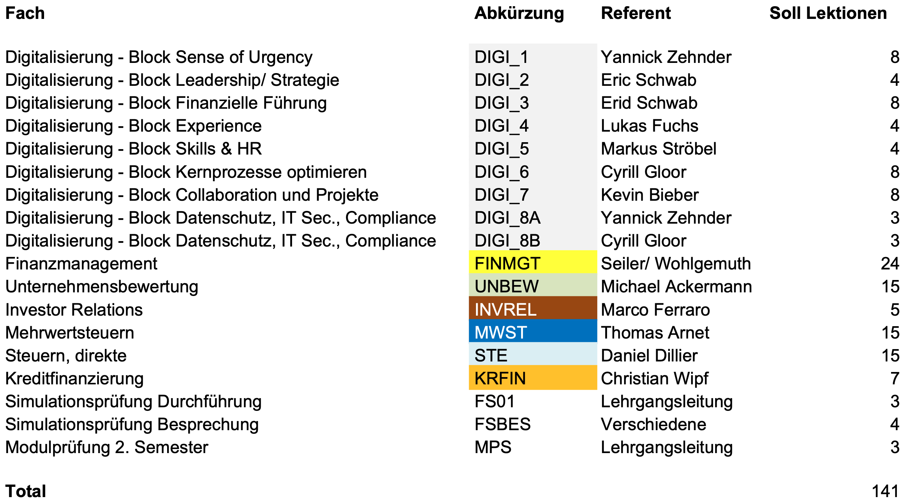

Einführung Digitalisierung – "Sense of Urgency"

Einführung Digitalisierung - "Sense of Urgency" by F. Yannick Zehnder is licensed under a Creative Commons Attribution-NonCommercial 4.0 International License.
- Einführung + Vorstellungsrunde
- Digital Literacy
- Domänen der Digitalisierung
- Die 4IR
- Emerging Technologies und Trends
- Remote-Technologie
- *aaS – As-a-Service-Technologie
- Blockchain
- Web3
Übersicht Modul Digitalisierung – Alle Themen im 2. Semester
Intro Yannick Zehnder

Jederzeit fragen! z.B. bei Anglizismen, Fachwörtern, Kauderwelsch.

Hier dürft ihr mitmachen, raten, denken, diskutieren.
Digital Literacy


01000100 01101111 00100000 01111001 01101111 01110101
00100000 01110011 01110000 01100101 01100001 01101011
00100000 01100010 01101001 01101110 01100001 01110010
01111001 00111111
Quelle: https://www.adigiconsult.ch/glossar/generation-silent-baby-boomer-x-y-me-millennials-oder-z/
Nennt 3 Domänen oder Arbeitsbereiche, die euch nahestehend und betroffen sind.
Nennt 3 Domänen oder Arbeitsbereiche, die eurer Meinung nach nicht betroffen sind.
Wer wird "Opfer" der Digitalisierung?
Wie verhindere ich, selbst eins zu werden?
- Bildung – z.B. achtung vor "Walled gardens"
- Taxifahrer – Uber
- Hotels – Airbnb
Die 4. Industrielle Revolution – 4IR
Quelle: http://www.acedepot.com/brincoinfaxm.html/
Welche industriellen Revolutionen kennt ihr?
- Beginn des 19. Jhdt.
- Maschinelle Automatisierung
- Ende des 19. Jhdt.
- Elektrifizierung
- Fliessbandarbeit (Ford)
- 70er Jahre des 20. Jhdt.
- Computer
- Erster Computer 1941, Zuse Z3
Die 4IR (4. Industrielle Revolution)
- Die Verbindung von Software, Hardware und Biologie ("Cyber-Physikalische-Systeme")
- Fortschritt in der Kommunikation und Konnektivität
- Durchbrüche in den aufkommenden Technologien (emerging technologies)
- Robotik
- Künstliche Intelligenz
- Blockchain
- Nanotechnologie
- Quantencomputer
- Biotechnologie
- Internet der Dinge (IoT)
- Industrielles Internet der Dinge (IIoT)
- Dezentralisierter Konsens
- 3-D-Druck
- Vollständig autonome Fahrzeuge